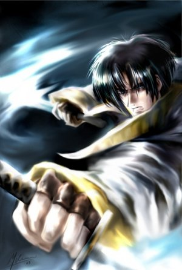

Forums galactiques > Taverne galactique : lieu de discussion informel > Miss galaxie 3 le vote
Cignia | 3 | |
Metamorphosis | 11 | |
Estelle | 7 | |
Demettra | 11 | |
KALAMAR VII | 13 | |
Total : 45 vote(s) | ||
| Metamorphosis Réputation à la taverne : 658  25/05 ETU 17:40  | Score : 2 Détails
Je remercie Sharhey, et à travers elle, Demettra (qu'est-elle donc devenue ?) pour le prix attribué. Comme l'illustre gagnant(e), que je félicite vivement, je remettrai les quatre planètes en jeu au prochain concours. Merci enfin à tous ceux qui sont venus passer un moment et qui ont encouragé les participantes de leurs votes. Ce fut un plaisir... | ||
| Nécrossius Réputation à la taverne : 251  25/05 ETU 20:32 | Score : 2 Détails Je regrette que méta n'ai pas pu gagner cela est triste,
tout comme la défaite de mistral. Nous félicitons son altesse kalamarienne pour avoir remporté cette haute compétition. | ||
| Aoshi L'Okashira Réputation à la taverne : 2  25/05 ETU 22:54 | Score : -3 Détails Allez Demettra je crois en vous , vous devez gagnez vous etes trop magnifique pour perdre
| ||
| mistral Réputation à la taverne : 6  26/05 ETU 18:48 | Score : 0 Détails Je n'ai pas perdu,mais certaines personnes (je ne la citerait pas je pense que toutle monde peut deviner de qui il s'agit)s'occupant du vote on OUBLIE de m'inscrire .Et je n'ai pas pu etre la pour le RP car j'ai eté atteinte d'une maladie rare:cloué-au-lit-par-une-angine-et-en-crachant-mes-tripes-tant-ma-toux-était-forte(et je vous passe les détails).
Donc tout le monde peut comprendre que je n'étais pas en état pour participer. | ||
| Metamorphosis Réputation à la taverne : 658 26/05 ETU 19:14 | Score : 0 Détails
Oh ! Pôvre minette !!! Eh montre nous en privé les toilettes que t'avais prévues... si t'avais pas été malade... et si tu avais été inscrite...^^ | ||
| mistral Réputation à la taverne : 6 26/05 ETU 19:28 | Score : 0 Détails Je n'avais rien prevu,étant donné que le soir ou je devais l'ecrire j'avais la crève(je me repete la...).
De toute facon on peut admettre que ca ne rime a rien de presenter son texte après l'election,n'est-ce-pas?Bien,puisque ce dilemme (qui n'en est pas un )est clos passons à autre chose,voulez vous?Merci d'avance. | ||
| Belzebot Réputation à la taverne : 1499  26/05 ETU 19:46 | Score : 1 Détails Votre maladie nous attriste miss chaton... Neanmoins, meme en pleine santé, il vous aurez été difficile de rivaliser contre les poids lourds du mannequina qui ont defilé lors de ce concour inter-universel... ^^
| ||
| Metamorphosis Réputation à la taverne : 658 26/05 ETU 19:52 | Score : 2 Détails
Oh le goujat sévit dans toutes les salles !!! Va de retro... heu... Mollusque ! Ah il a pas le triomphe modeste, celui-là ! | ||
| mistral Réputation à la taverne : 6 26/05 ETU 21:45 | Score : 0 Détails J'adore le poisson,et en particulier le mollusque...(non ne prennez pas ca comme une menace non;d'ailleur pourquoi le ferais-je?)
Et je n'ai demandé a personne de me pleindre je vous donnait juste les raisons pour lesquelles je n'avais pas pu participer a miss galaxie(depuis quand un mollusque est-il un prix de beauté?) | ||
| Demettra Réputation à la taverne : 348  26/05 ETU 23:34 | Score : 3 Détails (Depuis qu'il nous à tous grillé comme des sardines au barbecue...)
| ||
| Cignia Réputation à la taverne : 125  27/05 ETU 13:20 | Score : 2 Détails Bon,je fait une brève apparition ici pour vous temoigner ma deception.
Comme vous avez pu le constater,j'ai lamentablement perdu.Et j'aurais declarer forfait cela aurais été similaire au resultat que je constate. Enfin bon. Meri pour les 3 personnes qui ont voter pour moi et merci a Obi wan Kenobi de m'avoir encourager cela m'a redonner confiance en moi meme si je n'ai pas gagner. Je crois que je ne me presenterais plus a un concours de ce genre si c'est pour perdre de cette maniere et si c'est pour etre ainsi humiliée!! Ayant fait sa declaration,Cignia sortit de la salle en cachant comme elle pouvais sa tristesse et sa deception. | ||
| Arva Anyzzi Réputation à la taverne : 118  27/05 ETU 22:25 | Score : 2 Détails
Cignia, vous n'avez pas perdu parce que vous êtes laide! Bien au contraire! Vous êtes hors-concour, vous êtes bien trop belle pour ce genre de concour! Croyez moi, vous êtes la plus belle, pas de la galaxie, mais de l'univers! | ||
| Cignia Réputation à la taverne : 125 30/05 ETU 09:40 | Score : 1 Détails Merci beaucoup mais je ne saurais pas quoi vous repondre pour faire honneur a ce que vous venez de dire!!
(mais je crois que vous avez raison,je suis trop bien pour ce genre de concours!!!)(escuses Demettra!!) | ||
| Obi wan kenobi Réputation à la taverne : 43  30/05 ETU 10:22 | Score : 0 Détails Cignia tu sais ce que j'éprouve pour toi et comme je te l'ais dit tu es la plus belle a mes yeux physiquement et intèieurement.
Je t'aime Cignia,ton Obi | ||
| Ju Réputation à la taverne : 824  30/05 ETU 10:25 | Score : 3 Détails Et c reparti... Bah au moins c'est au bon endroit cet fois^^
| ||
| Cignia Réputation à la taverne : 125 30/05 ETU 10:27 | Score : 0 Détails Tu sais moi je n'y suis pour rien mais si tu veux je tacherais de rester dans la taverne pour ce genre de discutions!
| ||
| Obi wan kenobi Réputation à la taverne : 43 30/05 ETU 10:28 | Score : 0 Détails Où voulez vous que l'on parle de cela mlle Ju ?
Car apparament je dérenge non? Dans ce cas quelqu'un a cas ouvrir un topic pour que ceux qui s'aime puissent parler sans dérenger! Cignia====MP | ||
| Ju Réputation à la taverne : 824 30/05 ETU 10:47 | Score : 2 Détails Et voila...
un debut de carriere sans heurt... et l'erreur fatale... Mainteant je vais etre obligé de vous detruire Obi wan... a contre coeur, certes, mais obligé... Ravi de vous avoir connu. Cigna, toutes mes condoléances. | ||
| Obi wan kenobi Réputation à la taverne : 43 30/05 ETU 10:56 | Score : 1 Détails Et pourquoi cela?
Je ne vous ai pourtant pas contrarier enfin vous avez vos raison est bien sur je les respects donc si vous voulez me détruire faites le. | ||
| Leid Milhanah Réputation à la taverne : 620  30/05 ETU 11:03 | Score : 1 Détails ALaric regardait dubitatif les deux amants, que Red Bonett avait déglingué
-Du calme, du caaaaaalme les tourtereaux, JU aime taquiner c'est tout faut pas vous en faire, si je puis me permettre un conseil vous devriez vivre votre amour par mp, chacun y trouverait son compte, les uns eviteraient de vous taxer de miéleux et niais surtout, et vous pourriez faire vos escapades nocturnes en toute tranquillité! Tirant sur son narguilé, il reprit -Nan parcque je n'ai rien contre vous hein, mais personne n'a vraiment envie de savoir votre amour et toutes vos phrases, et puis on a aussi d'autres ugences mes amis, a bientot |
Forums galactiques > Taverne galactique : lieu de discussion informel > Miss galaxie 3 le vote